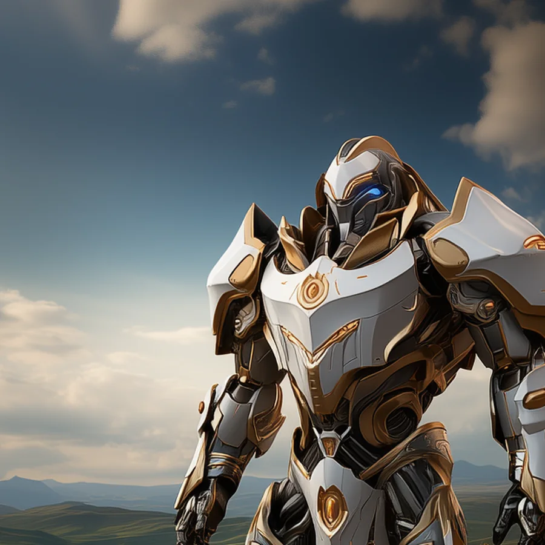

©
©
GENEZYS ARCHIVE · Earth 1 · Legionnaire
Vodary
Epoch Guard

Archive record
Vodary trains inside a glacier, where an entire day can pass in a single breath. The Stasis Ward freezes an enemy's energy in place before the strike follows. The Order says patience is a blade. Vodary has kept that blade sharp for years.
Combat signature
Stasis Ward
180 Cosmara
120 Animus
200 Vitalis
Builds a frozen barrier in continuum: Reduces the target's Cosmara by 100 and deals 80 damage.
Genezys 03:02 ™&©2026LEGIONS
Return to LEGIONS